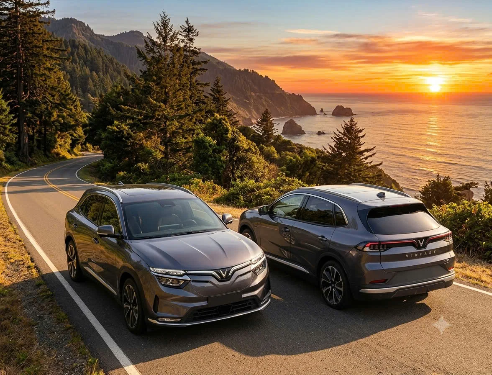

∞
Đi xa không phải đếm từng km.
Chính sách thuê không giới hạn km giúp bạn chủ động đi về quê, du lịch hay công tác nhiều điểm dừng.
Thuê VF8 Plus màu xám – SUV điện 5 chỗ rộng rãi, vận hành AWD, phù hợp cho chuyến đi gia đình, công tác hay du lịch cuối tuần.

TẠI SAO LÀ VF8 PLUS?
Không cần chọn giữa không gian thoải mái và cảm giác lái hiện đại. VF8 Plus mang đến cả hai trong một chiếc SUV điện.
Chính sách thuê không giới hạn km giúp bạn chủ động đi về quê, du lịch hay công tác nhiều điểm dừng.
Hệ dẫn động bốn bánh phù hợp khi bạn muốn trải nghiệm một chiếc SUV điện mạnh mẽ.
Rộng rãi cho người ngồi và hành lý; phù hợp gia đình và những chuyến đi dài.
TRẢI NGHIỆM THỰC TẾ
5 đoạn video do bạn cung cấp: cung đường, trạm sạc, ngoại thất buổi tối và giao diện màn hình trong xe.
↔ Kéo ngang để xem thêm · Nhấn vào video để mở khung lớn và bật âm thanh
GIÁ THUÊ & ĐIỀU KIỆN
Không cần đoán giá. Bạn xem trước các điều kiện cơ bản, sau đó gửi lịch để Thuận hoặc Ngọc xác nhận xe và chi phí cuối cùng.
Giá thuê cần xác nhận theo lịch và hình thức nhận xe.
Chưa phải xác nhận giữ xe hoặc đặt cọc thành công.
Quá giờ: 100.000đ/giờ; trễ quá 5 giờ tính thêm một ngày. Vệ sinh: 120.000đ. Khử mùi: 400.000đ. Chênh lệch pin: theo thực tế.
NHẬN TƯ VẤN ĐẶT XE
Cho mình biết ngày nhận, ngày trả và nơi nhận xe. Chỉ mất khoảng một phút để chuẩn bị thông tin; Thuận hoặc Ngọc sẽ xác nhận lịch trống và báo giá phù hợp.
Việc đặt cọc và khóa lịch tự động hiện chưa kích hoạt trên trang này.
CHỌN ĐÚNG XE · ĐI ĐÚNG LỊCH